Controllo di Gestione
Il modulo di Controllo di Gestione (CFO) rappresenta il cuore pulsante dell'intelligenza industriale di SiTeBoS. Accessibile direttamente dall'interfaccia principale tramite il pulsante ⚙️ Gestione Avanzata, questo modulo consente al titolare dello studio dentistico di visualizzare una scomposizione analitica dei margini economici delle singole prestazioni, simulare scenari operativi e verificare la conformità fiscale in base a dati reali aggregati.
La Pipeline di Generazione AI
La scomposizione economica e la progettazione dei requisiti del trattamento non si basano su stime arbitrarie o statiche. Quando viene avviata la generazione avanzata di un prodotto, il workflow n8n (definito in Dental_Advanced_processor.json) avvia una pipeline di calcolo strutturata in 5 fasi sequenziali. Questa pipeline impegna un'orchestrazione collaborativa di 6 Agenti AI specializzati per circa 10-12 minuti.
Workflow n8n di Generazione
FASE 1: Orchestrazione Iniziale & KPI
L'agente Operations Architect (Lead_Dental_Operations_Architect_and_Clinical_Reconciler) analizza il trattamento e definisce l'impronta dei requisiti (materiali, operatori, attrezzature, spazi fisici).
FASE 2: Sottoprocessi & BOM Clinica
Il Process Designer (Dental_Clinical_Process_Designer_and_Cost_Analyst) crea la BOM a 3 livelli (Sottoprocessi → Fasi → Step). Esegue l'unbundling dei trattamenti complessi e calcola il costo del personale (ASO e medico) basato sulle tariffe reali.
FASE 3: Scouting Listini & Prossimità
L'agente Sourcing Specialist esegue ricerche sul web e listini locali per abbinare i fornitori e comparare i prezzi dei materiali di consumo clinici.
FASE 4: Infrastruttura, Asset & Macchinari
L'Asset & Infrastructure Planner (Clinical_Dental_Asset_Manager_and_Cost_Analyst) calcola il costo d'uso reale basato su ammortamento macchine, usura e tempo sedia, integrando le checklist di manutenzione obbligatorie per legge.
FASE 5: Local Tax & Analisi CFO Strategica
L'agente Fiscal Researcher (RealTime_Localized_Fiscal_and_Compliance_Research_Agent) rileva TARI, IRAP regionale, CCIAA e RENTRI. Infine, il Senior CFO (Senior_Dental_CFO_and_Strategic_Operations_Consultant) elabora il Conto Economico Sintetico, il Break-Even Point, gli scenari volumetrici e la conformità ISA (Modello DK21U).
1. Accesso e Navigazione Modulo
All'apertura della pagina di Gestione Avanzata, l'utente visualizza un'interfaccia strutturata in schede. Utilizzando il menu laterale mobile (icona ☰ in alto a destra), è possibile scorrere rapidamente tra le diverse visualizzazioni della prestazione.
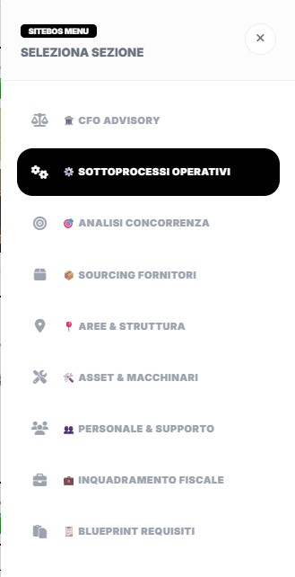
2. La Sidebar: Parametri Editabili & Ricalibrazione
Il pannello laterale sinistro della schermata consente di simulare in tempo reale l'impatto economico della variazione dei costi e dei prezzi della singola prestazione.
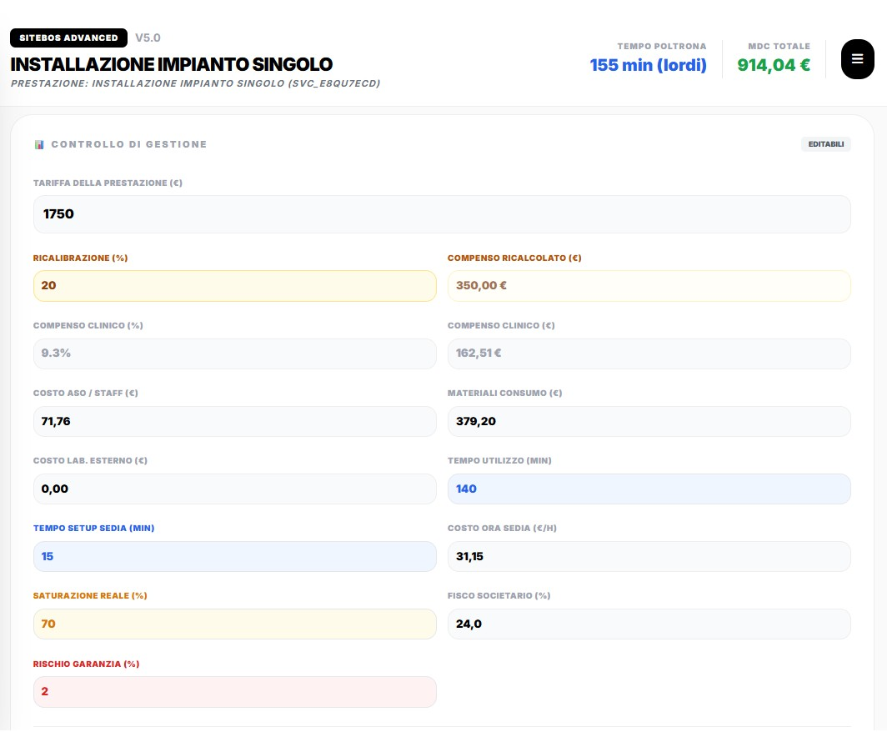
In questa sezione è possibile editare e simulare i seguenti parametri:
- Tariffa della Prestazione (€): Il prezzo al pubblico del trattamento.
- Ricalibrazione Ingaggio (%): Parametro introdotto per scollegare il compenso calcolato dall'AI (BOM basata sul tempo) rispetto all'ingaggio a percentuale reale concordato con il professionista. Accetta solo numeri interi. Modificando questo valore, il sistema ricalcola all'istante il compenso in € e aggiorna i margini. Se non presente a database, applica un fallback automatico al 20.0%.
- Staff di Supporto (€): Il costo del personale di supporto per la prestazione (ASO, segreteria). Viene ereditato dalla Distinta Base ma può essere modificato manualmente.
- Materiali Consumo (€) e Lavorazioni Esterne (€): Rispettivamente i costi dei consumabili fisici e delle lavorazioni protesiche/ortodontiche esterne.
- Tempo Utilizzo (Minuti) & Costo Orario Postazione (€/h): Il tempo di occupazione fisica della poltrona clinica e la tariffa oraria di struttura dello studio.
Logica di Calcolo del Costo Fisso Sedia Allocato
Il costo sedia fisso viene calcolato proporzionando la tariffa oraria complessiva dello studio sui minuti reali di occupazione poltrona, integrando sistematicamente un overhead tecnico fisso di 15 minuti standard necessario per lo sbarco del paziente e la decontaminazione/sanificazione rapida del riunito post-seduta:
Sintesi Caratteristica (Conto Economico)
Sotto i parametri editabili, la sidebar mostra in tempo reale la scomposizione economica caratteristica della prestazione, ripartendo i ricavi, i costi variabili diretti e i costi fissi sedia.
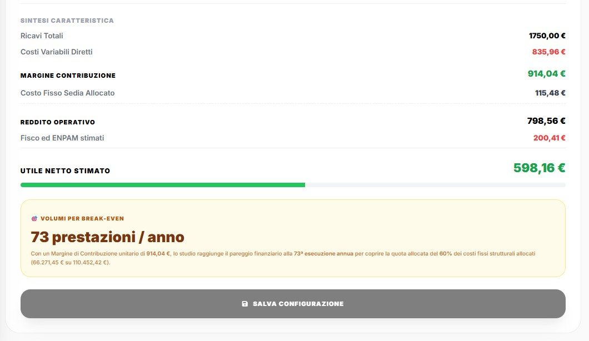
3. CFO Advisory & Posizionamento
La scheda principale 🏛️ CFO Advisory fornisce le analisi di posizionamento elaborate dall'AI, un semaforo di profitto basato sui margini e le raccomandazioni operative per l'ottimizzazione economica del servizio.
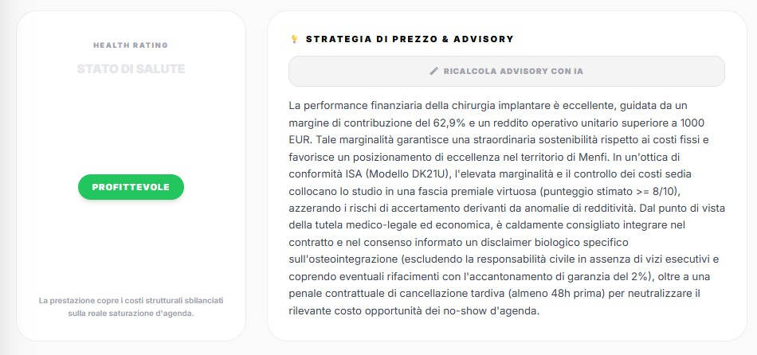
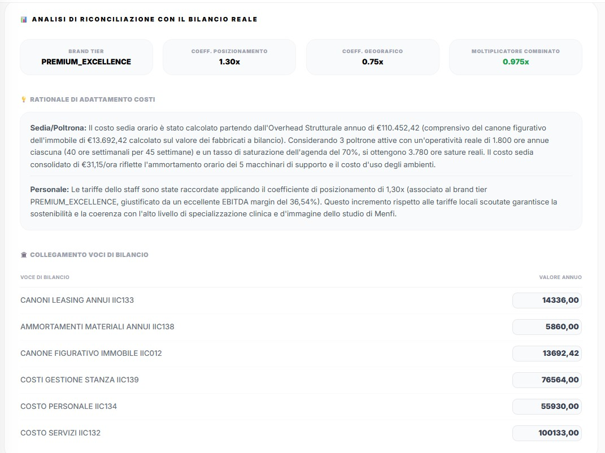
Simulatore di Volumi & Raccomandazioni
Attraverso lo slider interattivo, è possibile simulare la variazione dei profitti e della saturazione dell'agenda su base mensile in funzione delle prestazioni eseguite, leggendo i suggerimenti IA integrati.
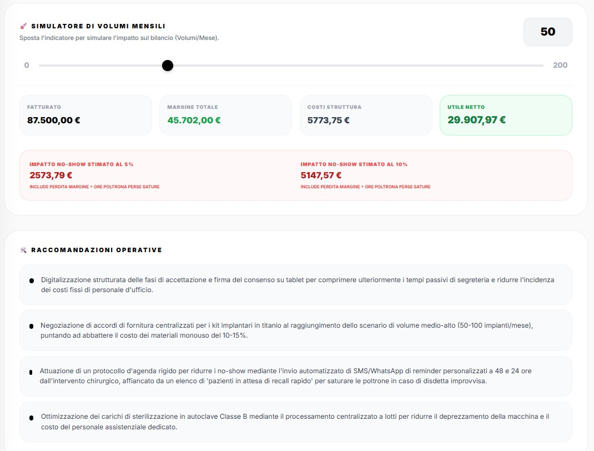
Analisi di Sensibilità No-Show & Costo Opportunità
Il sistema calcola la perdita finanziaria causata da appuntamenti mancati (5% e 10% di no-show). Il calcolo dell'AI include il costo opportunità reale legato alla sedia rimasta inutilizzata:
4. Sottoprocessi Operativi & Distinta Base
La scheda Sottoprocessi scompone il trattamento in una distinta base (BOM) strutturata a 3 livelli: Sottoprocessi → Fasi → Step. Questo consente all'AI di mappare i tempi di setup e le singole azioni per assegnare il costo orario reale di medici e ASO.
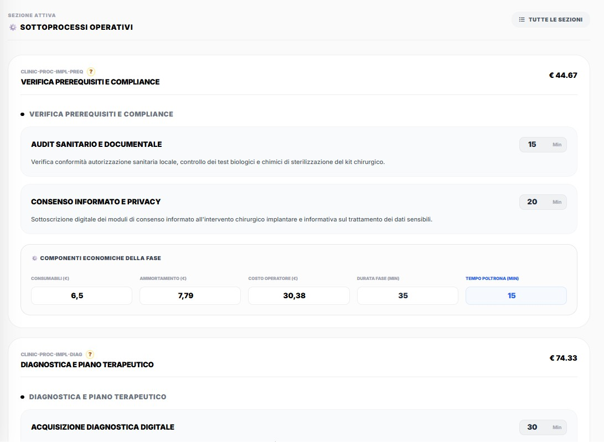
Ripartizione Oraria del Personale
Il costo del personale di supporto (ASO, segreteria) e medico viene riproporzionato in base al tipo di attività svolta in ciascuno step operativo:
- Lavoro clinico a quattro mani (Clinico + ASO): Durante gli step eseguiti al riunito, le tariffe orarie di Medico e ASO si sommano e si ripartiscono sulla durata dello step.
- Sanificazione e Setup (Solo ASO): Fasi di decontaminazione riunito e sterilizzazione degli strumenti. Si applica la sola tariffa dell'ASO.
- Check-In e Check-Out (Segretaria): Attività extra-cliniche amministrative e di preventivazione. Si applica la sola tariffa della segretaria.
5. Aree & Struttura Logistica
Questa scheda gestisce gli ambienti fisici occupati durante il trattamento (es. Studio Clinico, Reception, Sterilizzazione), ciascuno con la propria tariffa d'uso oraria.
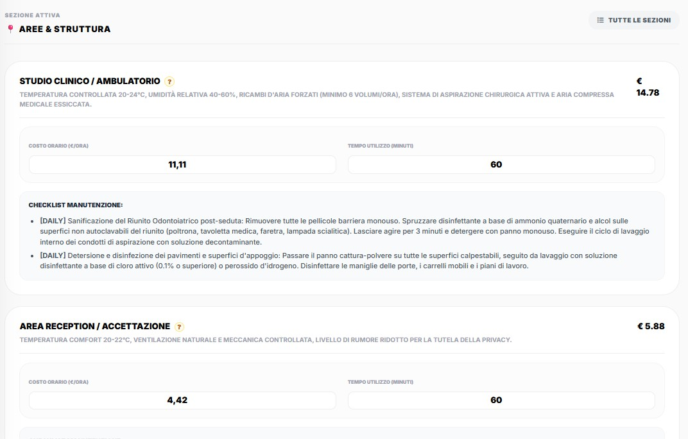
Cliccando sul pulsante con il punto di domanda "?" a fianco del costo di ciascun ambiente, viene visualizzato un overlay (modal) interattivo contenente il razionale esatto di calcolo.
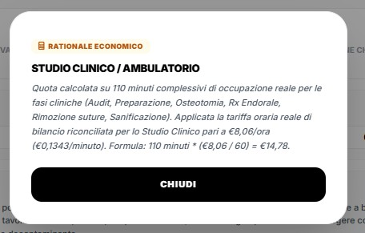
Equazione di Calcolo del Costo d'Uso della Stanza
6. Asset & Attrezzature Cliniche
In questa sezione vengono mappati i cespiti tecnologici associati alla prestazione (es. Riunito Odontoiatrico, Scanner Intraorale, Autoclave di Classe B). L'AI rileva la quota di ammortamento e usura oraria raccordata con il bilancio e imposta la checklist per i controlli preventivi e le verifiche obbligatorie per legge.
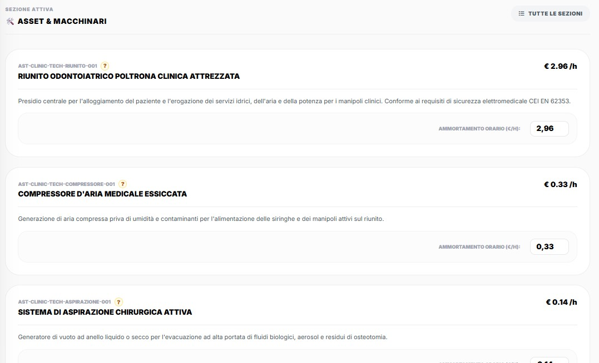
Anche in questo caso, la trasparenza è supportata da un overlay interattivo richiamabile con il pulsante "?", che mostra la quota esatta di usura e ammortamento tecnologico calcolata in base al tempo di effettivo impiego della macchina.
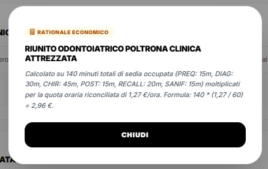
Standard di Manutenzione e Obblighi di Legge Generati
- Dispositivi di Sterilizzazione: Inserimento automatico dei test giornalieri obbligatori (Helix Test, Vacuum Test, Bowie & Dick) e della validazione annuale dei sensori di pressione/temperatura.
- Apparecchiature Radiologiche (CBCT / RX Endorale): Programmazione delle ispezioni dell'Esperto di Radioprotezione ai sensi del D.Lgs. 101/2020 e calibrazione dei tubi radiogeni.
7. Sourcing Fornitori & Competitor
L'agente Sourcing Specialist esegue una scansione dei listini dello studio e raccoglie in tempo reale i prezzi web (es. portali nazionali B2B come Dentaltix) per comparare le alternative di acquisto. L'utente può consultare il report di scouting e selezionare il fornitore partner preferito per ciascuna risorsa fisica.
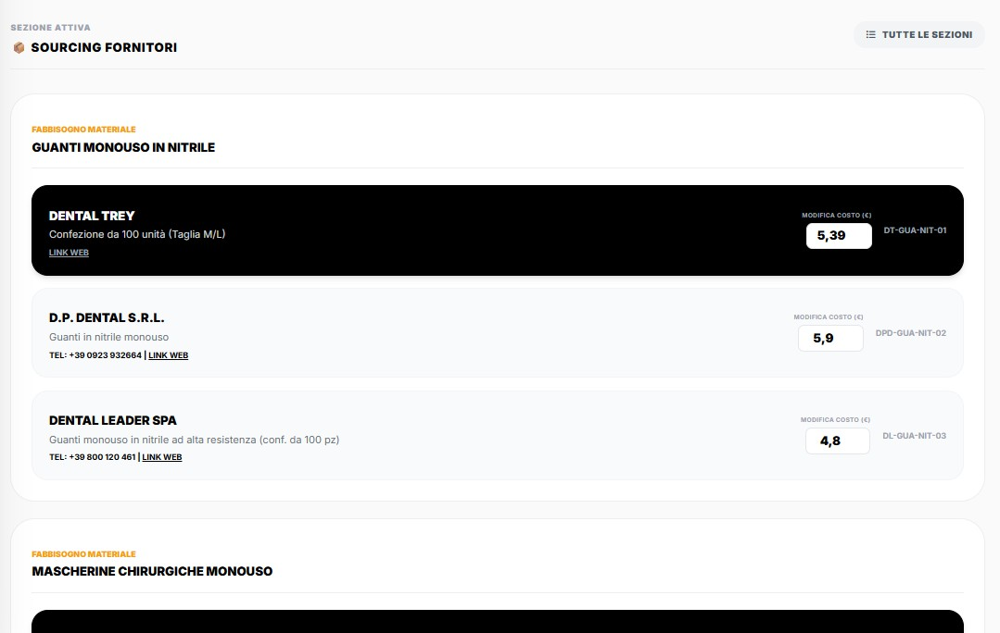
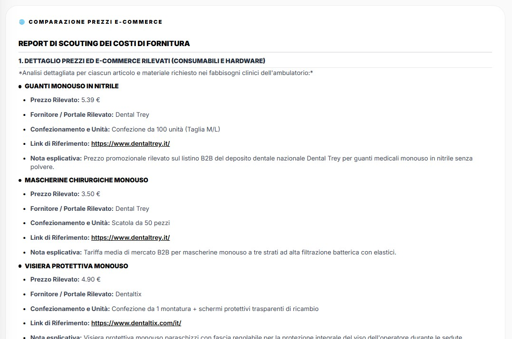
In parallelo, l'agente rileva i prezzi praticati nella stessa area geografica dagli studi concorrenti, calcolando un benchmark di prezzo medio per verificare il posizionamento strategico sul mercato.
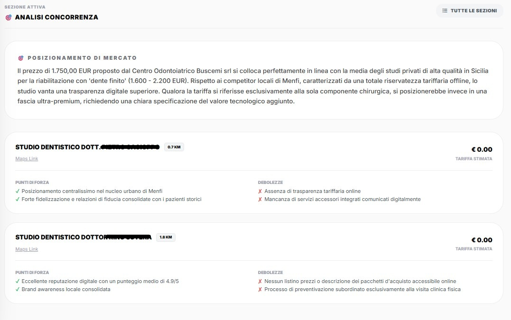
8. Personale & Supporto (Overhead Staff)
Questa scheda mostra l'elenco dei collaboratori indiretti coinvolti nella gestione clinica e amministrativa della prestazione (es. Coordinatore di Clinica, Receptionist, Responsabile Sterilizzazione). Mostra la scomposizione del costo orario allocato per ciascun ruolo overhead.
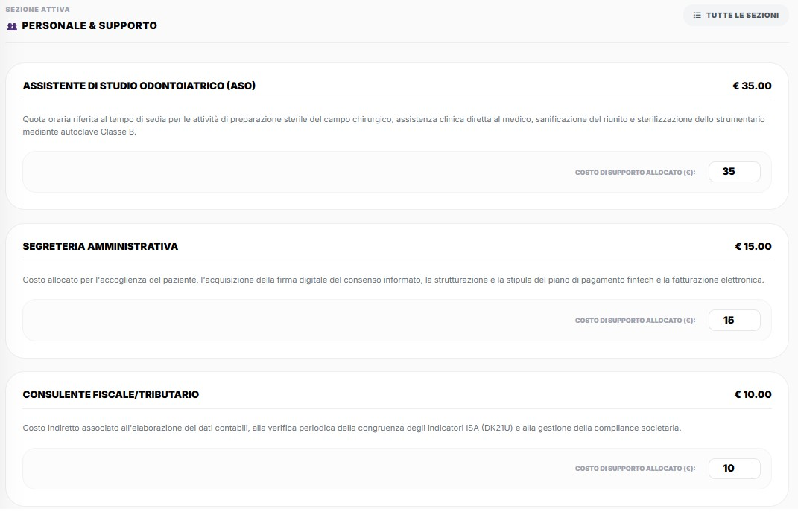
9. Inquadramento Fiscale & Affidabilità ISA (Modello DK21U)
In questa scheda l'utente configura i parametri tributari e previdenziali dello studio, quali l'aliquota previdenziale ENPAM societaria, i costi fissi strutturali totali annui e la quota di budget allocata per il calcolo del Break-Even Point.
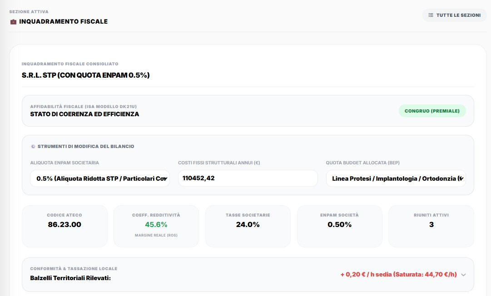
Per comprendere la composizione delle spese e delle tasse regionali/comunali, la scheda mostra il dettaglio dei balzelli territoriali stimati ed elaborati dall'AI in tempo reale.
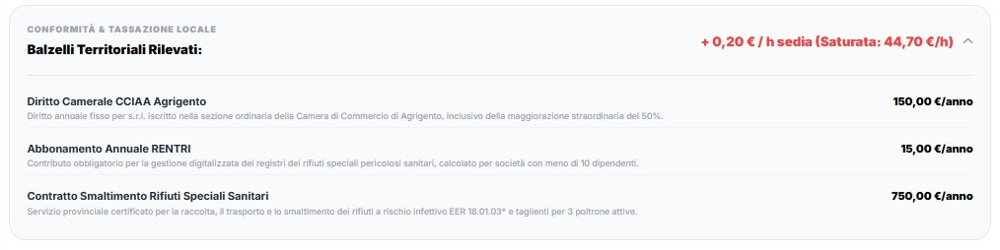
Affidabilità Fiscale - ISA Modello DK21U
L'agente Fiscal Researcher estrae i dati ministeriali legati all'ATECO 86.23.00 (Odontoiatria) per verificare che la ripartizione dei costi di poltrona, staff e materiali sia coerente con gli indici di affidabilità fiscale ISA dell'Agenzia delle Entrate. Il sistema calcola se il Reddito Operativo generato dallo studio garantisce l'accesso al Regime Premiale (punteggio >= 8/10), salvaguardando lo studio da accertamenti dovuti a anomalie dichiarative.
Coefficiente di Redditività Normativo
Per gli studi dentistici (Codice ATECO 86.23.00), il coefficiente di redditività stabilito è pari al 78%. Questo significa che, ai fini tributari ordinari e previdenziali del regime forfettario, lo Stato presume che il 78% del fatturato sia utile imponibile (e il 22% rappresenti i costi sostenuti per l'esercizio).
Balzelli Territoriali e Locali Rilevati
Il web crawler rileva dinamicamente le imposte locali della sede dello studio, integrandole nel calcolo del costo fisso sedia:
- Addizionali Regionali IRAP e diritti annuali dovuti all'Organismo di Accreditamento Sanitario regionale.
- TARI Comunale applicata alle superfici adibite a studio medico/sanitario (al netto delle riduzioni per rifiuti speciali pericolosi smaltiti autonomamente).
- Diritto Camerale Annuo dovuto alla Camera di Commercio (CCIAA) e quote di iscrizione al RENTRI (Registro Elettronico Nazionale Tracciabilità Rifiuti) per la gestione dei rifiuti infettivi EER 18.01.03*.
10. Blueprint di Riepilogo Requisiti
La scheda finale mostra la sintesi strutturata dei requisiti generati dall'agente Operations Architect: materiali di consumo, sottoprocessi operativi e adempimenti di compliance (consensi informati e informative privacy GDPR), spazi fisici, attrezzature necessarie ed operatori. Rappresenta la mappa di conformità e di allestimento per l'esecuzione della prestazione clinica.
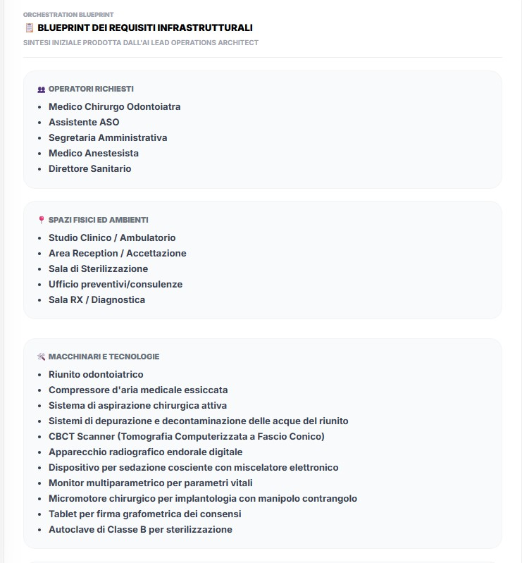